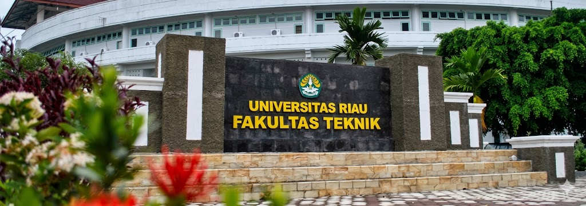

Fakultas Teknik Universitas Riau menghadirkan pendidikan teknik berkelas dunia, riset inovatif, dan lulusan yang siap memimpin industri nasional dan global.

Fakultas Teknik Universitas Riau adalah institusi pendidikan tinggi teknik terkemuka di Pulau Sumatera yang berkomitmen menghasilkan lulusan berkarakter, kompeten, dan berdaya saing global.
Menjadi Fakultas Teknik unggulan di tingkat nasional yang berwawasan global pada tahun 2035.
Mendorong kreativitas dan inovasi dalam setiap aspek pendidikan dan penelitian.
Menjunjung tinggi kejujuran, etika, dan profesionalisme dalam segala tindakan.
Berwawasan internasional dengan tetap berakar pada nilai-nilai lokal dan nasional.
Membangun sinergi antar disiplin ilmu, industri, dan masyarakat luas.
Pilih jalur pendidikan teknik terbaik yang sesuai dengan passion dan karir impian Anda.
Mempelajari perancangan, manufaktur, dan sistem mekanikal dengan teknologi terkini serta aplikasinya dalam industri.
Lihat DetailMengkaji sistem kelistrikan, elektronika, telekomunikasi, dan sistem kontrol otomasi modern.
Lihat DetailMerancang dan menciptakan bangunan fungsional, estetis, dan berkelanjutan berlandaskan seni dan teknologi.
Lihat DetailMerancang dan membangun infrastruktur modern yang aman, efisien, dan berkelanjutan untuk kemajuan bangsa.
Lihat DetailMenguasai proses industri kimia, pengolahan minyak bumi, dan teknologi lingkungan berkelanjutan.
Lihat Detail| No | Jurusan | Program Studi | Jenjang | Akreditasi | Gelar | Info |
|---|---|---|---|---|---|---|
| 1 | Teknik Sipil | Teknik Sipil | D3 | B | A.Md.T. | Detail |
| 2 | Teknik Sipil | Teknik Sipil | S1 | Unggul | S.T. | Detail |
| 3 | Teknik Sipil | Teknik Sipil | S2 | B | M.T. | Detail |
| 4 | Teknik Kimia | Teknik Kimia | D3 | BAIK SEKALI | A.Md.T. | Detail |
| 5 | Teknik Kimia | Teknologi Pulp dan Kertas | D3 | B | A.Md.T. | Detail |
| 6 | Teknik Kimia | Teknik Kimia | S1 | UNGGUL | S.T. | Detail |
| 7 | Teknik Kimia | Teknik Lingkungan | S1 | BAIK SEKALI | S.T. | Detail |
| 8 | Teknik Kimia | Teknik Kimia | S2 | BAIK SEKALI | M.T. | Detail |
| 9 | Teknik Mesin | Teknik Mesin | D3 | B | A.Md.T. | Detail |
| 10 | Teknik Mesin | Teknik Mesin | S1 | BAIK SEKALI | S.T. | Detail |
| 11 | Teknik Mesin | Teknik Mesin | S2 | B | M.T. | Detail |
| 12 | Teknik Elektro | Teknik Elektro | D3 | BAIK SEKALI | A.Md.T. | Detail |
| 13 | Teknik Elektro | Teknik Elektro | S1 | BAIK SEKALI | S.T. | Detail |
| 14 | Teknik Elektro | Teknik Informatika | S1 | BAIK SEKALI | S.Kom. | Detail |
| 15 | Arsitektur | Arsitektur | S1 | BAIK SEKALI | S.Ars. | Detail |
| 16 | Pascasarjana | Rekayasa Berkelanjutan (Sustainable Engineering) | S3 | TERAKREDITASI | Dr. | Detail |
| 17 | Profesi | Program Profesi Insinyur (PPI) | Profesi | BAIK | Ir. | Detail |
Data perkembangan Fakultas Teknik Universitas Riau dari tahun ke tahun.
Didukung oleh fasilitas modern untuk menunjang proses pembelajaran dan riset berstandar tinggi.
30+ laboratorium lengkap dengan peralatan modern untuk penelitian multidisiplin.
Konektivitas internet fiber optic di seluruh area kampus dengan kecepatan tinggi.
Akses ribuan jurnal internasional, e-book, dan database ilmiah terkemuka.
Ruang kuliah ber-AC, aula, dan ruang seminar berkapasitas besar yang representatif.
Lapangan olahraga lengkap untuk mendukung keseimbangan akademik dan fisik mahasiswa.
Layanan kesehatan gratis untuk seluruh mahasiswa dan civitas akademika.
Mahasiswa Teknik Elektro dan Teknik Kimia berhasil meraih gelar juara pertama dalam kompetisi robotik bergengsi tingkat nasional yang diselenggarakan di Jakarta.
Pendaftaran PMB Jalur Mandiri telah resmi dibuka. Daftarkan diri Anda sekarang dan raih kesempatan menjadi bagian dari FT UNRI.
FT UNRI menjalin kerja sama strategis dengan perusahaan energi multinasional untuk program magang dan penelitian bersama.
Kami siap membantu Anda mendapatkan informasi terkait program studi, pendaftaran, dan berbagai kegiatan di Fakultas Teknik UNRI.
Kampus Bina Widya, Jl. HR Soebrantas km 12.5, Panam, Pekanbaru, Riau 28293
(0761) 566937